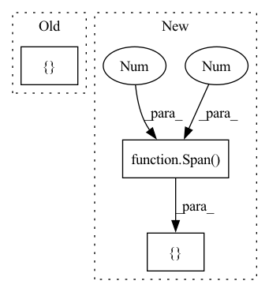

Pattern ID :22313
Before Change
"source2":{(0,1):"LABEL3", (2,6):"LABEL2"},
"source4":{(0,2):"LABEL2"}}
doc.user_data["agg_spans"] = {"source3":{(7,9):"LABEL2", (1,4):"LABEL1"}}
doc.user_data["agg_probs"] = {"source3":{7:{"B-LABEL2":0.7}, 8:{ "I-LABEL2":0.6} ,
1:{"B-LABEL1":0.9}, 2:{"I-LABEL1":0.55}, 3:{"I-LABEL1":0.85}}}
assert set(utils.get_spans(doc, ["source1", "source2"]).keys()) == {(0,2), (2,6)}After Change
doc.spans["source2"] = [Span(doc, 0, 1, label="LABEL3"),
Span(doc, 2, 6, label="LABEL2")]
doc.spans["source4"] = [Span(doc, 0, 2, label="LABEL2")]
doc.spans["source3"] = [ Span(doc, 7, 9, label="LABEL2"),
Span( doc, 1 , 4 , label="LABEL1") ]
assert set((span.start, span.end) for span in
utils.get_spans(doc, ["source1", "source2"])) == {(0,2), (2,6)} In pattern: SUPERPATTERN
Frequency: 4
Non-data size: 3
Instances Fragment ID: 70397442
Project Name: norskregnesentral/skweak
Commit Name: b76b17284329e1ff3ff0d6f47d4695557d3cd72d
Time: 2021-04-18
Author: plison@nr.no
File Name: tests/test_utils.py
M Class Name: AnonimousClass
N Class Name: AnonimousClass
M Method Name: test_get_spans(1)
N Method Name: test_get_spans(1)
M Parent Class:
N Parent Class:
M File Name: tests/test_utils.py
N File Name: tests/test_utils.py
M Start Line: 52
M End Line: 64
N Start Line: 51
N End Line: 58
Before Change
def test_docbins(nlp_small, temp_file="data/temporary_test.docbin"):
doc = nlp_small("Pierre Lison is working at the Norwegian Computing Center.")
doc2 = nlp_small("He is working on various NLP topics.")
doc.user_data["spans"] = { "test":{(0,2):"PERSON"}}
utils.docbin_writer([doc, doc2], temp_file)
doc3, doc4 = list(utils.docbin_reader(temp_file, "en_core_web_sm"))
assert doc.text == doc3.text
assert doc2.text == doc4.text After Change
def test_docbins(nlp_small, temp_file="data/temporary_test.docbin"):
doc = nlp_small("Pierre Lison is working at the Norwegian Computing Center.")
doc2 = nlp_small("He is working on various NLP topics.")
doc.spans["test"] = [ Span( doc, 0 , 2 , label="PERSON") ]
utils.docbin_writer([doc, doc2], temp_file)
doc3, doc4 = list(utils.docbin_reader(temp_file, "en_core_web_sm"))
assert doc.text == doc3.text Fragment ID: 70397282
Project Name: norskregnesentral/skweak
Commit Name: b76b17284329e1ff3ff0d6f47d4695557d3cd72d
Time: 2021-04-18
Author: plison@nr.no
File Name: tests/test_utils.py
M Class Name: AnonimousClass
N Class Name: AnonimousClass
M Method Name: test_docbins(2)
N Method Name: test_docbins(2)
M Parent Class:
N Parent Class:
M File Name: tests/test_utils.py
N File Name: tests/test_utils.py
M Start Line: 81
M End Line: 81
N Start Line: 83
N End Line: 85
Before Change
doc = nlp_small("Pierre Lison is working at the Norwegian Computing Center.")
assert doc.ents[0].text=="Pierre Lison"
assert doc.ents[0].label_=="PERSON"
doc.user_data["spans"] = {"test":{ (6, 9):"RESEARCH_ORG"} }
doc = utils.replace_ner_spans(doc, "test")
assert doc.ents[0].text=="Norwegian Computing Center"
assert doc.ents[0].label_=="RESEARCH_ORG"After Change
doc = nlp_small("Pierre Lison is working at the Norwegian Computing Center.")
assert doc.ents[0].text=="Pierre Lison"
assert doc.ents[0].label_=="PERSON"
doc.spans["test"] = [ Span( doc, 6 , 9 , label="RESEARCH_ORG") ]
doc = utils.replace_ner_spans(doc, "test")
assert doc.ents[0].text=="Norwegian Computing Center"
assert doc.ents[0].label_=="RESEARCH_ORG" Fragment ID: 70397440
Project Name: norskregnesentral/skweak
Commit Name: b76b17284329e1ff3ff0d6f47d4695557d3cd72d
Time: 2021-04-18
Author: plison@nr.no
File Name: tests/test_utils.py
M Class Name: AnonimousClass
N Class Name: AnonimousClass
M Method Name: test_replace_ner(1)
N Method Name: test_replace_ner(1)
M Parent Class:
N Parent Class:
M File Name: tests/test_utils.py
N File Name: tests/test_utils.py
M Start Line: 72
M End Line: 72
N Start Line: 73
N End Line: 76
Before Change
doc = nlp_small("Pierre Lison is working at the Norwegian Computing Center.")
doc2 = nlp_small("He is working on various NLP topics.")
doc.user_data["spans"] = {"test":{(6, 9):"RESEARCH_ORG"}}
doc2.user_data["spans"] = { "test":{}}
utils.json_writer([doc, doc2], temp_file, source="test")
fd = open(temp_file, "r")
assert "I-RESEARCH_ORG" in fd.read()After Change
doc = nlp_small("Pierre Lison is working at the Norwegian Computing Center.")
doc2 = nlp_small("He is working on various NLP topics.")
doc.spans["test"] = [ Span( doc, 6 , 9 , label="RESEARCH_ORG") ]
doc2.spans["test"] = []
utils.json_writer([doc, doc2], temp_file, source="test") Fragment ID: 70397450
Project Name: norskregnesentral/skweak
Commit Name: b76b17284329e1ff3ff0d6f47d4695557d3cd72d
Time: 2021-04-18
Author: plison@nr.no
File Name: tests/test_utils.py
M Class Name: AnonimousClass
N Class Name: AnonimousClass
M Method Name: test_json(2)
N Method Name: test_json(2)
M Parent Class:
N Parent Class:
M File Name: tests/test_utils.py
N File Name: tests/test_utils.py
M Start Line: 99
M End Line: 100
N Start Line: 101
N End Line: 104